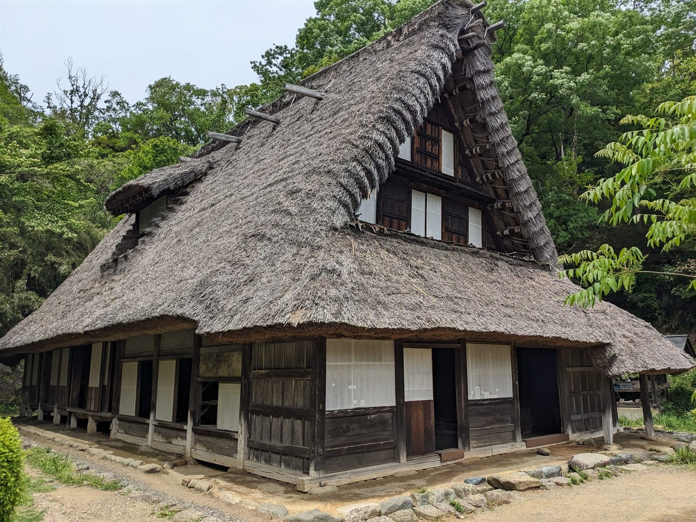

Google評価 4.8(118件のクチコミ)
山を登った先に、良寛も愛した静けさがある。
弥彦山麓・国上(くがみ)の古民家カフェ 日月カフェ
弥彦山麓、国上の山道を登った先に、一軒の古民家がぽつんと佇んでいます。呼ばなければ、店員も来ません。ここにあるのは、ただ静かに流れる時間だけです。
01
古民家
一軒の古民家を、そのままの佇まいで。
02
庭園と四季
新緑、紫陽花、蝉時雨。縁側から眺める季節。
03
静けさ
呼ばなければ、誰も来ない。干渉されない時間。
RYOKAN & KUGAMI
良寛が愛した、国上という土地
国上山・国上寺のあるこの一帯は、江戸時代後期の僧侶であり歌人・書家でもあった良寛が、晩年を過ごした地として知られています。日月カフェは、その山麓にひっそりと佇む一軒の古民家カフェです。良寛が見ていたかもしれない山の静けさを、今もこの土地は静かにたたえています。

SPACE
空間の特徴
縁側の席からの眺め
縁側に腰を下ろせば、手入れの行き届いた庭園がそのまま額縁のように広がります。
窓を開ければ、テラス席のような開放感
窓を開けて過ごすお客様も。山から吹き抜ける風とともに、テラス席のような開放感を味わえます。
扉を閉めれば、個室のような落ち着き
好きな席を選べるスタイル。扉を閉めれば、個室のように落ち着いて過ごせる席もあります。
呼ばなければ、店員が来ない
一般的な「おもてなし」とは少し違う接客です。必要なときだけ、必要なぶんだけ。誰にも急かされない時間をお過ごしください。
MENU
静けさとともに味わう、ひと皿
01
バスク風チーズケーキ
口の中でとろけるような食感が評判の、当店の看板スイーツです。
02
お抹茶と和菓子のペアリング
地元の和菓子店の和菓子とお抹茶を合わせる、季節を味わうひとときです。
VOICE
お客様の声
Googleクチコミ118件・評価4.8の中から、いくつかの感想をご紹介します。
“
「緑に囲まれ、お庭も素敵で、席もゆったりしていて静かに過ごせる」というお声をいただきました。紫陽花の意匠の和菓子とバスク風チーズケーキを楽しまれたそうです。
— ご来店のお客様より“
「好きな席を選べるスタイルで、どの席も景色が良く、他のお客様との距離が近くない。店員も呼ばなければ来ないので、人と関わりたくない方にも良い」というお声もいただいています。
— ご来店のお客様より“
「都会の喧騒から離れ、山深く奥まった中にポツンと佇む一軒の古民家。手入れの行き届いた庭園は涼しげな新緑に溢れ、縁側の席からは最高の落ち着きを堪能できる」との感想をお寄せいただきました。
— ご来店のお客様よりGoogleクチコミより(2026年9月時点 評価4.8/118件)
!お越しになる前に、必ずお読みください
- 山道の先にあり、道幅が非常に狭い区間があります
- 大型車のご来店は困難です。軽自動車・小型車を推奨します
- カーナビの案内より、本ページの案内を優先してください
- お食事(ランチ)はお電話でのご予約制です
CALENDAR
営業日・営業期間
営業日:日曜日・月曜日(※要確認)
営業期間:春〜秋(12月頃より冬季休業)
季節や天候により、営業日・営業状況が変わる場合がございます。お出かけ前に、Instagramなどで最新情報のご確認をおすすめします。